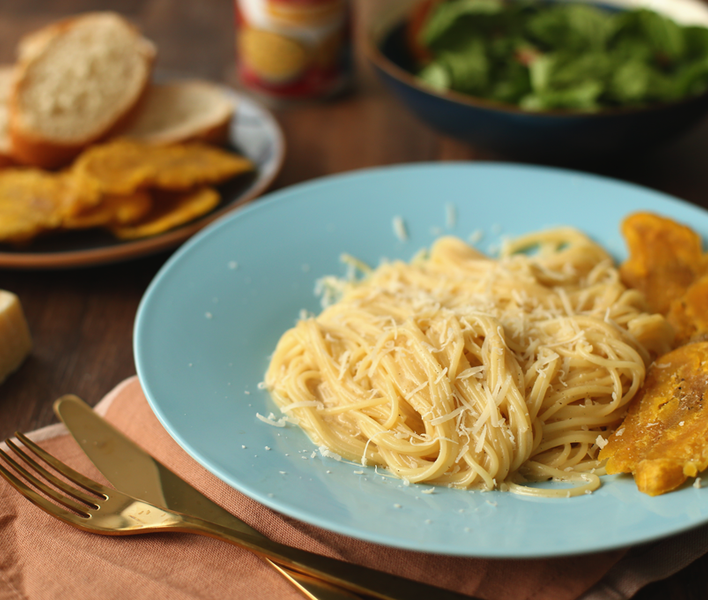
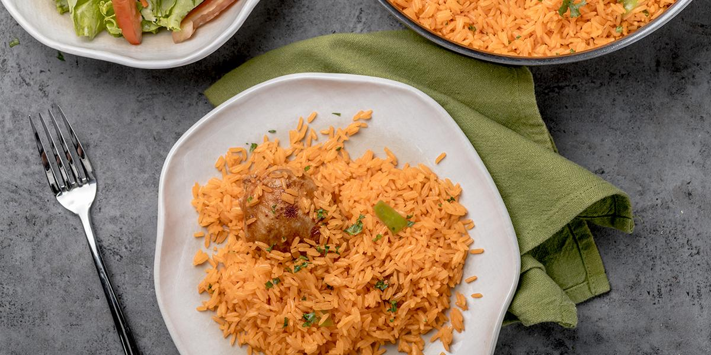
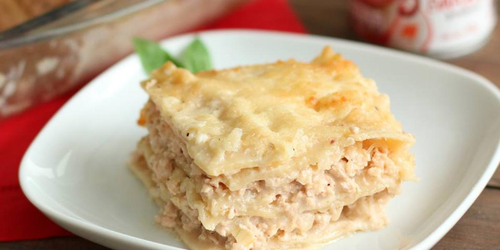
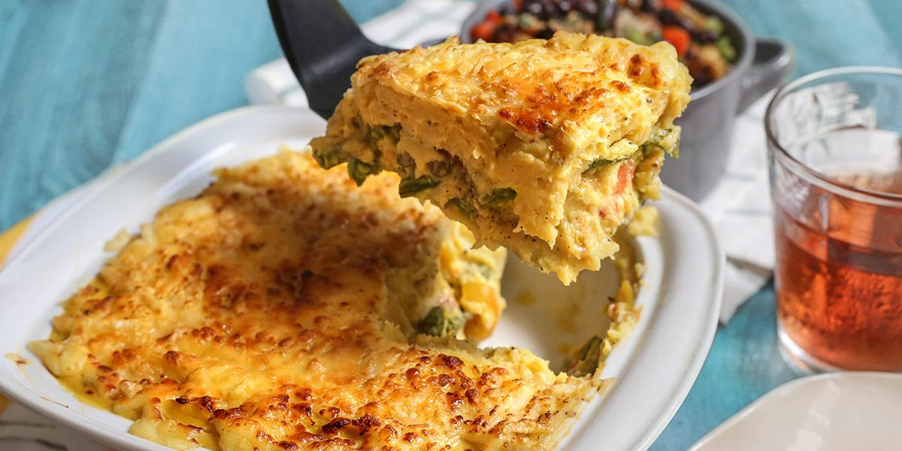
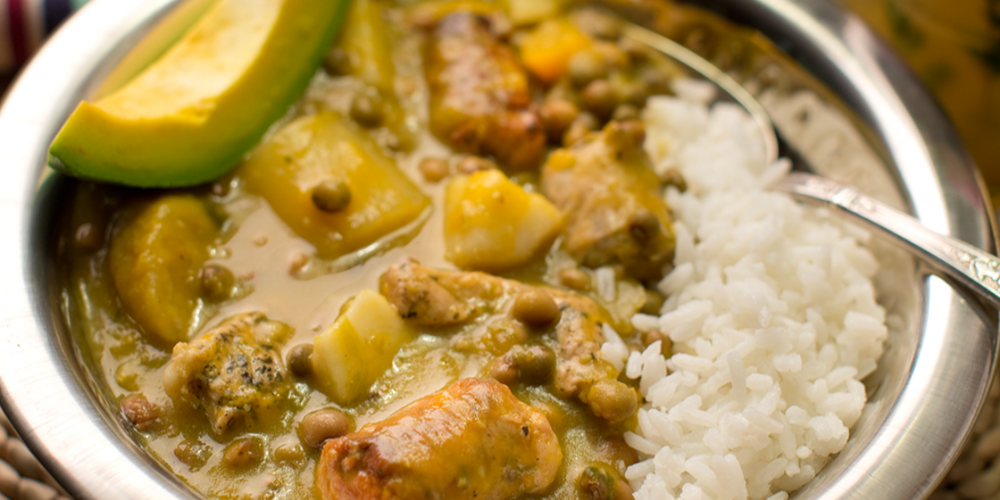
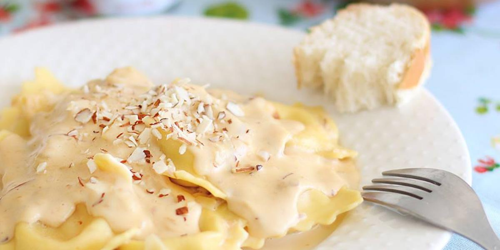
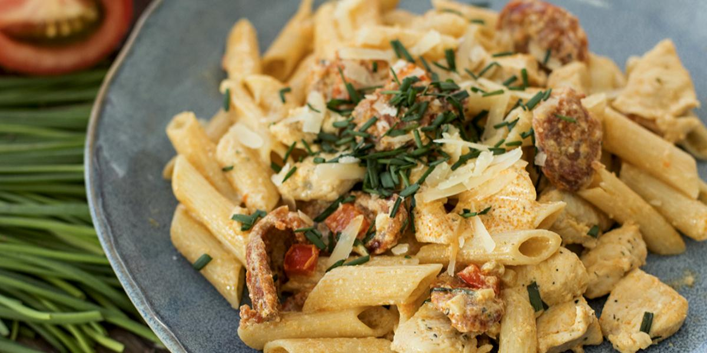
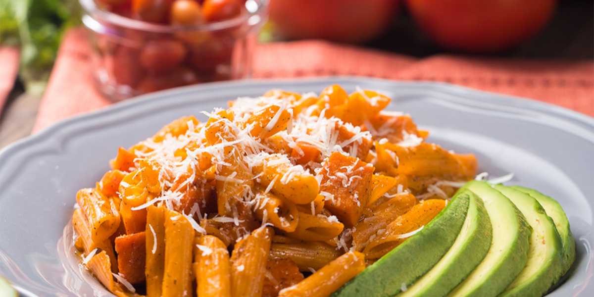
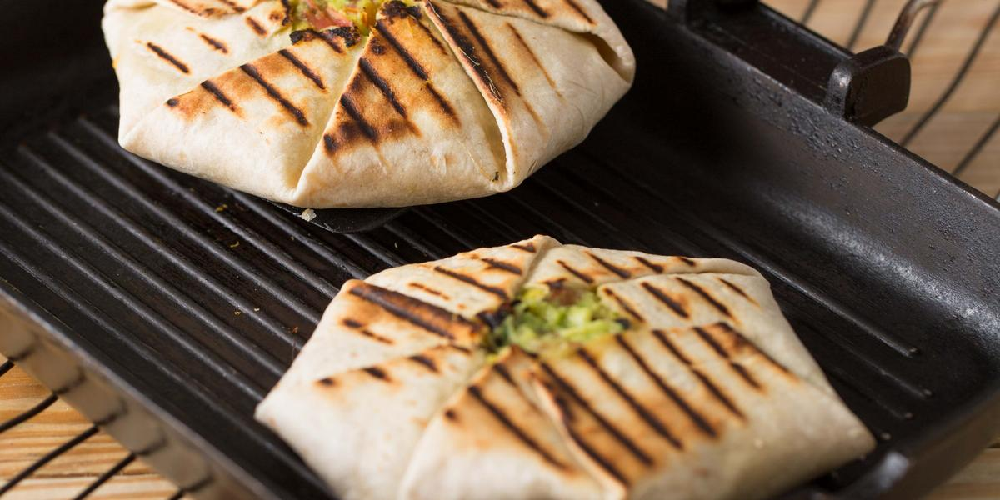
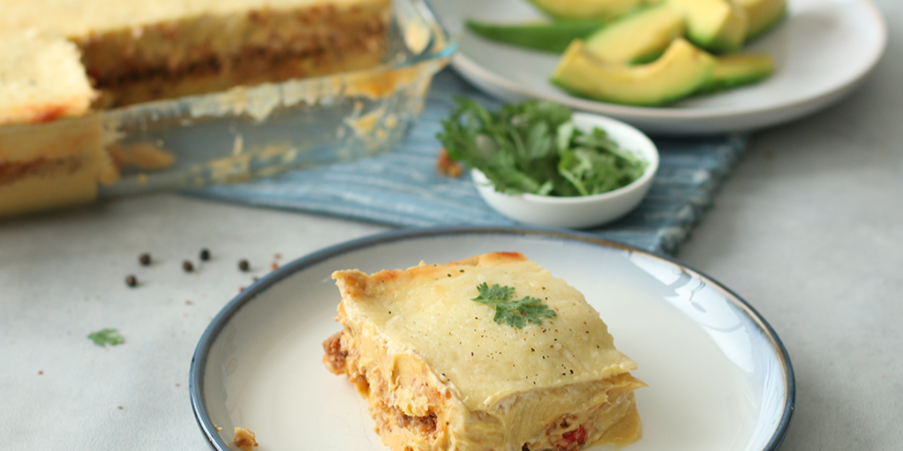

SABOR DEL CORAZÓN
Recetas de cocina





Receta 1
Pasta a la Carnation
Ingredientes
1 Libra Espagueti hervidos con sal.
1 Cucharada grande de Mantequilla.
2 Tabletas Caldo De Gallina.
1 Unidad Leche Evaporada Carnation Queso UHT 290ml.
1 Taza Agua.
Preparación
En una sartén, lleva al fuego la mantequilla, añade los Caldos
de Gallina y la Leche Evaporada de Queso, agrega los espaguetis,
mezcla bien, retira del fuego y sirve.
Receta 2
Raviolis en Salsa de Almendras

Ingredientes
1 Libra Pasta tipo ravioles, cocidos al denté
3 Cucharadas grandes Mantequilla
1/2 Taza Cebolla Blanca picadita
1 1/3 Taza Almendras tostadas y trituradas
2 Tabletas Caldo De Gallina Disueltas en 1/2 taza de agua caliente.
1 Unidad Leche Evaporada Carnation UHT 300ml
4 Cucharadas grandes Queso Parmesano
Preparación
Paso 1
Saltea la cebolla en la mantequilla por 3 minutos, agrega las almendras y las tabletas de
Caldo de Gallina disueltas en la 1/2 taza de agua caliente, vierte a Leche Evaporada,
mezcla y deja cocinar, a fue lento, hasta obtener la consistencia deseada.
Paso 2
Agrega los ravioles, mezcla y sirve con el queso parmesano por encima.
Receta 3
Pasta Con Pollo Y Chorizo

Ingredientes
1 Cucharada grande Mantequilla.
1 Libra Pechuga De Pollo cortada en cubos sazonada con ½ Cucharada de Sazón Completo.
1/2 Unidad Ajo picadito.
1/2 Taza Chorizo picadito.
1/4 Taza Puerro picadito.
1/2 Taza Pimiento Morron, Rojo cortado en cubos.
1/8 Cucharadita Pimienta De Cayena Opcional.
1 1/4 Taza Leche Evaporada Carnation Queso.
1 Tableta Caldo De Gallina.
1/2 Libra Pasta hervida con sal.
Preparación
Paso 1
En la mantequilla cocina el pollo por 8 minutos o hasta que este cocido y retira.
En la misma sartén, agrega el ajo, el chorizo, el puerro, el pimiento rojo y la
pimienta, cocina por 4 minutos.
Paso 2
Vierte la Leche Evaporada Sabor a Queso, el Caldo De Gallinan y la pasta,
cocina por 5 minutos, retira y sirve.
Receta 4
Pasta con Chuleta y Zanahoria

Ingredientes
1 Libra Pasta hervida con sal.
1 Cucharada grande Aceite De Canola.
1/4 Taza Cebolla Blanca picadita.
2 Unidades Ajo majados.
1/2 Libra Chuleta De Cerdo ahumada, cortadas en cuadritos.
1 Taza Zanahorias cortada en cuadritos.
1/8 Cucharadita Pimienta Negra Molida.
1/4 Cucharadita Orégano.
2 bolsas Caldo en Polvo Gallinita con Tomate.
2 Tazas Agua caliente.
1/4 Taza Queso Parmesano rallado.
Preparación
Paso 1
En el aceite caliente, sofríe por 3 minutos la cebolla, el ajo y la chuleta.
Paso 2
Añade la zanahoria, la pimienta, el orégano y el Caldo en Polvo Gallinita con Tomate MAGGI®.
Vierte el agua y la pasta, mezcla bien. Cocina por 3 minutos, retira del fuego, sirve con el
queso por encima.
Receta 5
Locrio de Pollo
Ingredientes
1 Libra Pollo cortada en piezas.
1 Cucharada grande Sazón Completo.
2 Unidades Ajo majados con ½ Cucharadita de sal.
1 Cucharada grande Aceite De Girasol.
1 Unidad Ají cubanela cortado en dados.
1 Unidad Atado de Verduras picadito.
1/4 Taza Cebolla Blanca picadita.
2 bolsas Caldo en Polvo Gallinita con Tomate disueltos en 3 Tazas de agua, caliente.
1 Libra Arroz Largo
Preparación
Paso 1
Sazona la carne con el Sazón Completo y el ajo. En el aceite caliente sofríe la carne hasta dorar.
Paso 2
Agrega el ají, el atado de verduras, la cebolla y el caldo en Polvo Gallinita con Tomate
Paso 3
Cuando rompa el hervor, incorpora el arroz, mezcla bien, deja hervir hasta secar.
Paso 4
Tapa, baja el fuego, cocina por 20 minutos más. Pasado el tiempo, retira del fuego y sirve.
Receta 6
Tacos de Churrasco Crocante

Ingredientes
1 Cucharada grande Mantequilla.
1 Libra Churrasco limpio.
1 Cucharada grande Sazonador Naturísimo Maggi®, 260G.
1 Cucharadita Paprika.
1/4 Cucharadita Pimienta De Cayena.
1 Cucharadita Comino en polvo.
1 Taza Aguacates triturado.
1 Cucharadita Sazón Completo.
2 Manojos Cilantrico picadito (2 cucharadas).
1 Taza Tomate picadito.
1/2 Taza Cebolla Roja picadita.
1 Taza Queso Cheddar rallado.
4 Unidades Tortillas de Trigo.
Preparación
Paso 1
Sazona la carne con el Sazonador Naturísimo MAGGI®, la paprika, la pimienta de cayena y el comino,
reserva.
Paso 2
Mezcla el aguacate, el Sazón Completo MAGGI® y la mitad del cilantrito, reserva. Aparte mezcla el
tomate con la cebolla y el cilantrito restante, reserva.
Paso 3
3-En una plancha o sartén, lleva al fuego la mantequilla, cocina la carne a término tres cuartos por
ambos lados. Retira de la plancha, pica, coloca porciones de la carne en el centro de cada tortilla,
un poco de aguacate, un poco del tomate y un poco del queso, cierra. Coloca en una plancha caliente,
cocina por dos minutos de cada lado o hasta dorar, retira de la plancha y sirve.
Receta 7
Pastelón de Plátano Maduro

Ingredientes
10 Unidades Platano Maduro hervidos con sal.
1 Barra Mantequilla.
2 Unidades Huevo.
1 Taza Queso Parmesano rallado.
1 Libra Carne de Res molida.
1 Cucharada grande Sazón Completo.
1/2 Cucharadita Pimienta Negra Molida.
1/2 Cucharadita Orégano.
1 Pieza Ajo majado.
3 Cucharadas grandes Aceite De Maíz.
3 Cucharadas grandes Pasta De Tomates.
1/3 Taza Pimiento Morron, Rojo picadito.
1/3 Taza Cebolla Blanca picadita.
1 Unidad Ají cubanela picadito.
1 Tableta Caldo De Gallina disuelto en ½ taza de agua caliente.
1/4 Taza Pasas.
1/4 Taza Aceitunas picaditas.